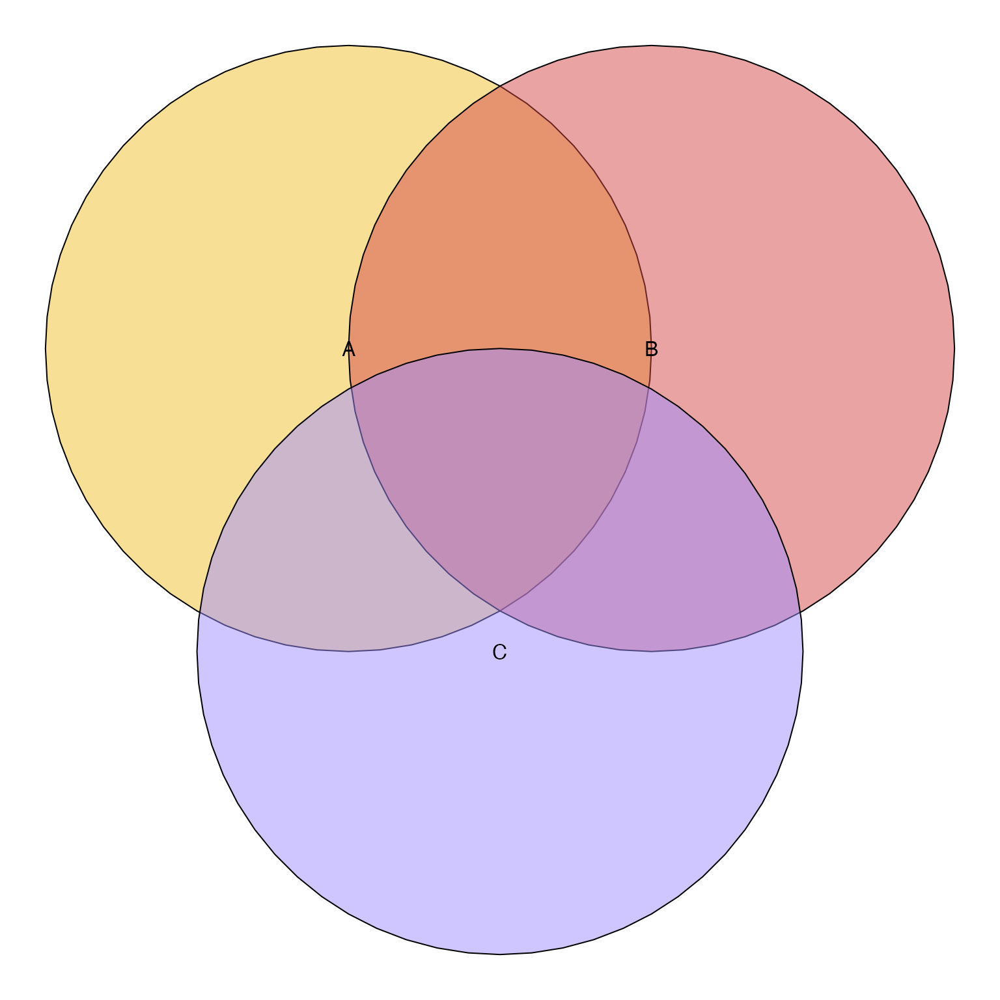

Get Venn shapes as polygon_list
Usage
get_venn_polygon_shapes(
counts,
proportional = FALSE,
sep = "&",
circles_only = FALSE,
circle_nudge = NULL,
rotate_degrees = 0,
return_type = c("JamPolygon"),
...
)Arguments
- counts
integervector whose names represent set overlaps, where set names are separated bysepdelimiter.- proportional
logicalindicating whether to create proportional circles, whereproportional=FALSEcreates standard Venn diagram, andproportional=TRUEcreates a Euler diagram.- sep
characterdelimiter used to separate set names innames(counts).- circles_only
logicalindicating whether to force Venn 4-way diagram to use only circles; or passed toeulerr::euler()to force it to return circles instead of allowing ellipse shapes.- circle_nudge
listofnumericvectors each length 2, whose names match set names derived fromcounts. For example ifcounts=c(set_A=5, set_B=10, "setA&set_B"=3), then to nudge theset_Acircle, usecircle_nudge=list(set_A=c(1, 0)). This argument is intended to allow manipulation of specific circle or ellipse positions for aesthetic effects. Particularly for proportional Euler diagrams, sometimes the algorithm places circles in non-ideal locations- rotate_degrees
numericvalue indicating rotation in degrees for the entire set of shapes. This argument is intended to change the overall orientation, for example so that certain sets are at the top.- ...
additional arguments are ignored.
Value
list in polygon_list format with "x" and "y" elements,
or when return_type="JamPolygon" it returns JamPolygon.
Details
This function takes a Venn overlap counts and creates corresponding circles or ellipses that represent either a Venn diagram, or proportional Venn (Euler) diagram.
For non-proportional Venn diagrams, this function accepts up to 5 sets, although the 5-way Venn diagram is not visually intuitive.
For proportional Euler diagrams, this function simply passes
the count vector to eulerr::euler() and returns the output.
That function accepts more sets, however not all overlaps may
be represented in the output.
See also
Other venndir polygons:
simple_ellipse()
Examples
counts <- c(A=1, B=2, `A&B`=3, C=4)
venn_colors <- colorjam::rainbowJam(3, alpha=0.5);
vjp <- get_venn_polygon_shapes(counts, return_type="JamPolygon")
plot(vjp, fill=venn_colors)

vjp <- get_venn_polygon_shapes(counts,
return_type="JamPolygon",
proportional=TRUE)
plot(vjp, fill=venn_colors)